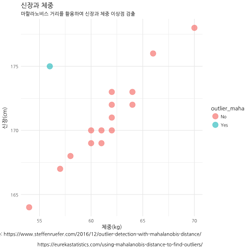
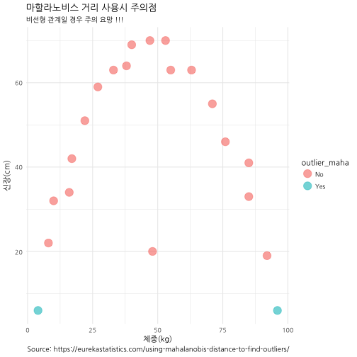

xwMOOC 기계학습
이상점 검출 - 마할라노비스(mahalanobis) 거리
마할라노비스 거리 1 2
다차원 공간에서 이상점을 찾아내는 간단한 방법이 마할라노비스 거리를 활용하는 것이다. 유클리디안 거리를 다차원 공간으로 확장한 것으로 생각하면 쉽게 이해할 수 있다.
평균 \(\vec{\mu} = ( \mu_1, \mu_2, \mu_3, \dots , \mu_N )^T\)와 공분산 \(S\)를 갖는 벡터 \(\vec{x} = ( x_1, x_2, x_3, \dots, x_N )^T\)에 대한
마할라노비스 거리에 대한 수학적 정의는 다음과 같다.
\(D_M(\vec{x}) = \sqrt{(\vec{x} - \vec{\mu})^T S^{-1} (\vec{x}-\vec{\mu})}\)
신장과 체중
# 신장과 체중 데이터
df <- data.frame(height_cm=c(164, 167, 168, 169, 169, 170, 170, 170, 171, 172, 172, 173, 173, 175, 176, 178),
weight_kg=c( 54, 57, 58, 60, 61, 60, 61, 62, 62, 64, 62, 62, 64, 56, 66, 70))
# 신장과 체중 분포에 대한 마할라노비스 거리 계산
m_dist <- mahalanobis(df[, 1:2], colMeans(df[, 1:2]), cov(df[, 1:2]))
df$m_dist <- round(m_dist, 2)
# 마할라노비스 이상점 - 임계점을 12로 설정
df$outlier_maha <- "No"
df$outlier_maha[df$m_dist > 12] <- "Yes"
# 시각화
ggplot(df, aes(x = weight_kg, y = height_cm, color = outlier_maha)) +
geom_point(size = 5, alpha = 0.6) +
labs(title = "신장과 체중",
subtitle = "마할라노비스 거리를 활용하여 신장과 체중 이상점 검출",
caption = "Source: https://www.steffenruefer.com/2016/12/outlier-detection-with-mahalanobis-distance/ \n
https://eurekastatistics.com/using-mahalanobis-distance-to-find-outliers/") +
ylab("신장(cm)") + xlab("체중(kg)") +
scale_y_continuous(breaks = seq(160, 200, 5)) +
scale_x_continuous(breaks = seq(35, 80, 5)) +
theme_minimal(base_family = "NanumGothic")
마할라노비스 거리 적용시 주의점
마할라노비스 거리를 활용하여 이상점을 추출할 수 있으나 선형적인 관계가 존재할 때 유용하고 비선형인 경우 이상점을 잘못 검출할 수 있다.
# 주의점 ------------------------------------------------------------------
caveats_df <- data.frame(x=c(4, 8, 10, 16, 17, 22, 27, 33, 38, 40, 47, 48, 53, 55, 63, 71, 76, 85, 85, 92, 96),
y=c(6, 22, 32, 34, 42, 51, 59, 63, 64, 69, 70, 20, 70, 63, 63, 55, 46, 41, 33, 19, 6))
caveats_dist <- mahalanobis(caveats_df[, 1:2], colMeans(caveats_df[, 1:2]), cov(caveats_df[, 1:2]))
caveats_df$m_dist <- round(caveats_dist, 2)
# Mahalanobis Outliers - Threshold set to 12
caveats_df$outlier_maha <- "No"
caveats_df$outlier_maha[caveats_df$m_dist > 5] <- "Yes"
ggplot(caveats_df, aes(x = x, y = y, color = outlier_maha)) +
geom_point(size = 5, alpha = 0.6) +
labs(title = "마할라노비스 거리 사용시 주의점",
subtitle = "비선형 관계일 경우 주의 요망 !!!",
caption = "Source: https://eurekastatistics.com/using-mahalanobis-distance-to-find-outliers/") +
ylab("신장(cm)") + xlab("체중(kg)") +
theme_minimal(base_family = "NanumGothic")